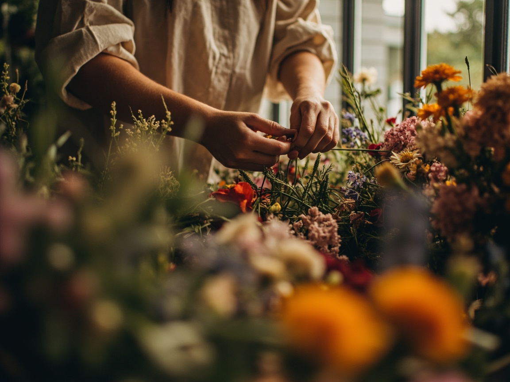

- Bauernranunkel, Buttercup, Schleierkraut
- Wuchshöhe ca. 45 cm, handgebunden
- Abholung Fr 10–18 Uhr im Atelier
Jeden Freitag binden wir aus saisonaler Ernte der Marktbauern Uckermark & Spreewald einen Strauss in französisch-gärtnerischer Manier. Kein Import, keine Standardrose, kein Plastik.
Was in dieser Woche auf dem Markttisch landet, entscheidet das Wetter in Beelitz und die Ernte der Bauerngärtnerei Vieracker. Wir binden vor Ort — keine Kühlware, keine Standardmischung.

Wir begleiten maximal 38 Brautpaare pro Jahr. Damit bleibt Zeit für zwei Vorgespräche, einen Probestrauss vier Wochen vorher und ein Team, das am Tag selbst nicht in Stress gerät.
Dreimal im Jahr öffnen wir das Atelier in der Reichenberger Str. 42. Kleine Gruppen, viel Handwerk, viel Zeit für Fragen. Alle Materialien sind inklusive.
Fr · 14. März 2025 · 18–21 Uhr
Für Einsteiger. Du lernst den Spiralschnitt, den Aufbau eines Bauerngarten-Strausses und nimmst dein eigenes Werk mit nach Hause — inklusive Vasen-Tipps für die Haltbarkeit.
Sa · 7. Juni 2025 · 11–16 Uhr
Mit getrockneten Blüten aus eigener Anzucht, Eukalyptus und heimischem Tannengrün. Du bindst einen Kranz auf Stroh-Unterlage — ohne Plastik, ohne Kupferdraht-Schaum.
Sa · 11. Oktober 2025 · 10–17 Uhr
Ein ganzer Tag im Atelier. Wir stellen eigene Trockengestecke her — vom Wandkranz bis zur langlebigen Tischdekoration. Mit kleinem Mittagessen aus der Atelierküche.
Blütenwerk begann 2014 als kleiner Stand auf dem Markt am Maybachufer. Heute arbeiten sechs Hände in einem Atelier in Kreuzberg: Lieselotte, Idris und Fatou. Wir binden selbst, beraten selbst, liefern selbst — kein Zwischenhändler, keine Filiale, kein Franchise.
Unsere Blumen kommen zu 100 % aus der Region: von der Bauerngärtnerei Vieracker in Beelitz, vom Hof Schrader im Spreewald und aus eigener Anzucht auf dem Atelier-Dach. Import-Flugware lehnen wir konsequent ab — auch im Februar, wenn die Auswahl klein wird.
— Lieselotte, Idris & Fatou
Ob Freitag-Strauss, Hochzeitstermin 2025 oder Workshop-Platz: Schreib eine kurze Mail oder ruf an. Wir antworten in der Regel innerhalb eines Werktages — und beraten ehrlich, auch wenn etwas nicht passt.
Atelier Reichenberger Str. 42 · 10999 Berlin · geöffnet Di–Fr 10–18 Uhr